충남대학교 컴퓨터공학과 조은선 교수님의 "컴파일러 개론" 강의를 필기한 내용입니다.
다소 잘못된 내용과 구어적 표현 이 포함되어 있을 수 있습니다.
Top-down 구문분석
- 시작심벌부터 시작해 가능한 좌측 유도를 다 해보는 것
- 물론 전부 다 하는건 아니고 하나씩 맞춰보면서 한다
- a가 들어왔으면 a로 시작하는 생성규칙 중 첫번째꺼부터 해보는 것
- 매치되는 생성규칙이 없을 떄 Backtracking 을 함
- 바로 직전의 생성규칙을 롤백시키고, 토큰도 다시 Stream에 넣어주고 다른 생성규칙을 시도
- 따라서 Backtracking의 오버헤드는 매우 클 수도 있다
- 더이상 적용할 생성규칙이 없으면 틀린것으로 인식
예제
- accd에 대해 Top-down방식으로 구문분석을 하면
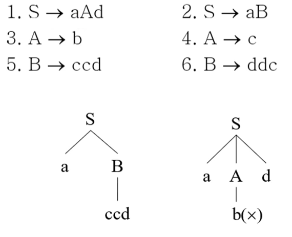
- 일단 시작심벌에서 a로 시작하는 규칙이 두개 있으므로 1번부터 해봄
- 그다음에는 c로 시작하는 규칙이 4번이므로 4번을 적용
- 논터미널이 더이상 없는데 매칭되지 않으므로 4번을 롤백, 3번을 골라도 안되므로 백트래킹 - 1번를 롤백하고 2번 적용
- 2번을 적용한 뒤 c로 시작하는것이 5번 규칙이므로 5번을 적용
- 적용후에 논터미널이 더이상 없고, 매치되므로 문법을 준수한다고 판단
LL파싱
- 일단 Left-to right, 즉, 왼쪽에서 오른쪽으로 읽어나가며 파싱한다
- 결과적으로 Left Parse 즉, 좌파스가 생성되게 된다
- 또한 LL파싱의 제일 중요한 특징은 Deterministic Parsing 이다
- 입력 문자가 하나 들어오면 해당 입력문자에 적용될 수 있는 생성규칙은 하나여야 된다는 것
- 예를 들면 위의 예제에는 S → aAd와 S → aB가 있으므로 a가 들어왔을 때 생성규칙이 두개가 가능하다
- 이러한 경우에 Deterministic 하지 않다라고 하는 것
- 입력문자와 생성 터미널이 다르면 백트래킹 안하고 걍 틀린것으로 간주 - 백트래킹을 안한다는 장점이 있지만
- 결정적이지 않은 경우에는 걍 파싱을 안한다 - 즉, 파싱할 수 있는 범위가 좁다는 단점이 있다
- 따라서 LL파싱은 조금이라도 결정적으로 파싱이 될 수 있는 가능성이 있는 문법만을 받아 결정적이지 않은 곳은 다듬어서 사용하고
- 입력문자당 적용될 생성규칙을 key-value쌍으로 미리 뽑아두고 파싱하게 된다.
- 따라서 규칙을 보고 필요한 정보가 무엇인지 모으는 작업을 하게 된다
- 이때 정보라는 것은 일련의 집합이며 FIRST, FOLLOW , LOOKAHEAD 등등이 존재한다
FIRST
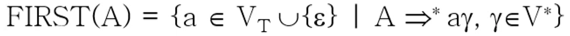
- Nonterminal A로부터 유도될 수 있는 모든 것들 중 맨 먼저 나올 수 있는 terminal들의 집합이다
- 아래 예제 보면 딱이해됨
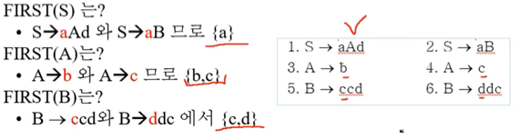
- S로 유도되는 문자열은 무조건 a로 시작하므로 FIRST(S)는 {a}
- A로 유도되는 문자열은 무조건 b아니면 c로 시작하므로 FIRST(A)는 {b, c}
- B로 유도되는 문자열은 무조건 c아니면 d로 시작하므로 FIRST(B)는 {c, d}인 셈
- 만약에 S → Abe가 추가된다면 FIRST(A)가 {b, c}였기 때문에 S로 유도되는 문자열은 b나 c로 시작할 수도 있게 됨 - 따라서 FIRST(S)는 {a, b, c}가 된다
FIRST 계산하는 방법
- 일단 e-생성규칙(여기서 e는 입실론, 즉, 널을 의미함)은 X → e의 형태를 의미한다
- 그리고 Nullable nonterminal은 Nonterminal A가 e로 유도될 수 있을 때를 의미함 - 이렇게되면 A는 사라져벌이는 것
- LHS, RHS는 뭔지 알제? 생성규칙의 화살표 기준으로 왼쪽에 있는놈이랑 오른쪽에 있는 놈
- Ring Sum은 아래 보면 딱 안다
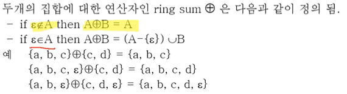
- 즉, 먼저등장하는놈에 널이 없으면 뒤에꺼는 걍 무시
- 널이 있으면 앞에놈에서 널을 빼고 뒤에꺼랑 합집합
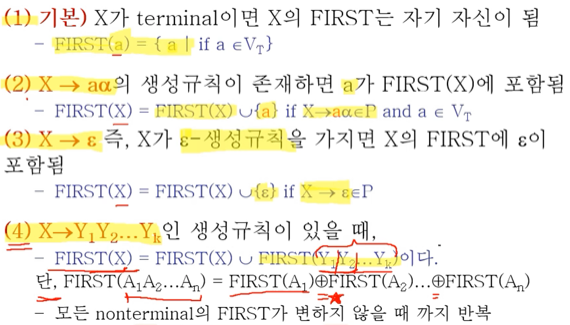
- FIRST를 계산하는 규칙은 위와 같다
- 뭐 1, 2, 3번은 걍 개껌이고
- 4번을 좀 잘 봐야되는데 4번에서 = 오른쪽에 있는 FIRST(X)는 1, 2, 3번을 통해 구해낸 FIRST(X)를 의미한다
- 그리고 여기다가 Y1부터 Yk까지를 RingSum해서 합집합을 해주면 됨
- 이짓을 모든 Nonterminal의 FIRST가 변하지 않을 때까지 반복한다는데 이건 뒤에 가면 이해될거임
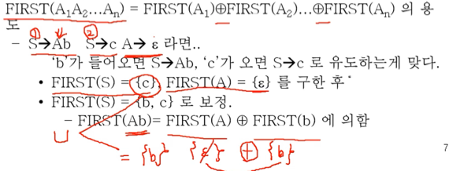
- 위의 예제를 보면
- FIRST(S)를 구할 때 일단 S → Ab는 제쳐두고 두세번째 규칙을 보면
- 일단 두번째 식으로 F(S) = {c}이고 세번째 식으로 F(A) = {e}임
- 첫번째 식을 처리하기 위해 F(Ab) 를 뜯어보면
- 이건 F(A) (+) F(b)이기 때문에 {e} (+) {b}가 되고 따라서 {b}가 된다
- 이것을 두번째 식으로 구한 {c}와 합집합해주면 {b, c}가 되는 것
- 따라서 S에서 b나 c가 들어오면 정상이지만 그렇지 않으면 오류를 출력하면 되는 것이다
예제들
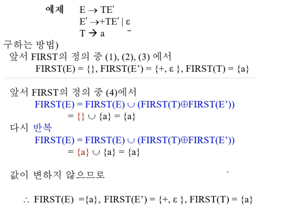
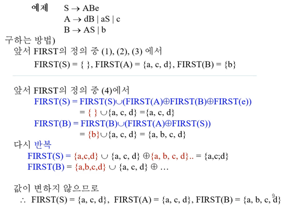
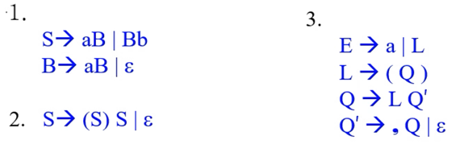
- 이거 반드시 시험에 나오니까 그냥 과정 자체를 외워버려라
- 일단 모든 Nonterminal에 대한 FIRST들을 공집합으로 두고
- 1, 2, 3번 규칙으로 가능한 Nonterminal들에 대해 FIRST들을 갱신한다
- 그리고 4번 규칙을 이용해 가능한 Nonterminal들에 대해 FIRST들을 갱신하고
- 갱신한 것들을 가지고 다시한번 4번 규칙을 적용해 갱신해본다
- 만약 갱신되지 않는다면, 완료
FOLLOW
- FIRST의 문제점 : Non-terminal이 Nullable한 상황에서는 FIRST만을 구하는 것으로는 한계가 있음
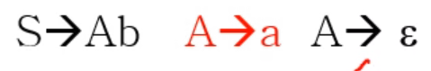
- 이 예시를 보면 딱 이해된다
- 만약에 b가 들어오면 세번째 놈을 선택하면 된다는 것을 우리는 딱 보면 알 수 있다
- 컴퓨터 입장에서도 FIRST(S)가 {a, b}이기 때문에 b가 들어오면 구문분석이 가능하다는 것을 깨닫고 첫번째를 선택할 것이다
- 하지만 선택하고 난 뒤에는 FIRST(A)가 {a, e}이기 때문에 b를 만들 수 없다고 판단하게 되는것
- 즉, 이론적으로는 가능한 상황임에도 FIRST만 생각하면 로직때문에 구문분석이 안되는 경우가 생기더라
- 따라서 FOLLOW는 이러한 경우를 대비해 Nonterminal의 바로 뒤에 나오는 terminal들을 모은 집합이 되는 것
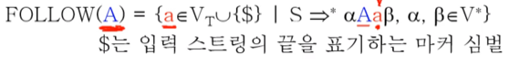
- 뭐 결과적으로 따져보면 Non-terminal 뒤에 나오는 모든 terminal의 집합이라는 말이나 같다
- FIRST를 구하기 위해서는 해당 Non-terminal이 LHS에 등장하는 경우를 중점적으로 봤다면,
- FOLLOW를 구하기 위해서는 해당 Non-terminal이 RHS에 등장하는 경우를 중점적으로 살피게 된다 - 바로 뒤에 나오는 terminal들을 살피기 위해
FOLLOW를 구하는 방법
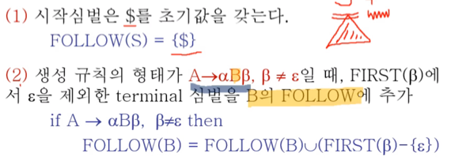
- 일단. 시작심벌은 EOF를 뜻하는 $를 초기값으로 가진다 - Non-terminal뒤에 EOF이 나와도 문제가 없기 때문
- 2번은 우리가 구하고자 하는 Non-terminal 뒤에 나오는 놈이 nullable하지 않다면, 바로 뒤에 나오는 놈의 FIRST를 추가해주면 된다는 말이다
- 이것도 당연한 말이쥬? 바로 뒤에 null이 안나오면 바로 뒤에 있는 놈의 FIRST가 나 자신의 FOLLOW가 될 수 있는 것이니께
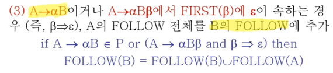
- 얘는 우리가 구하고자 하는 Non-terminal이 생성규칙의 마지막에 있거나, 아니면 마지막에 있지는 않지만 그 뒤에 바로 나오는 놈이 Nullable하다면 해당 생성규칙의 LHS에 있는 놈의 FOLLOW도 넣어주라 이말이야
- 얘도 좀만 생각해보면 당연한 말이다 - 만약에 Non-terminal이 시작심볼이면 이놈 뒤에 연달아 나오는 놈은 없으니까 생각할 필요가 없지만
- 만약 S → Ab, A → cB인 경우에 B의 FOLLOW를 구한다면 B뒤에는 첫번째 생성규칙에 따라 b가 올 수 있으므로 LHS인 A의 FOLLOW인 b도 추가해줘야 된다는 것이다
- 따라서 만약 A → xB, B → xA형태의 경우에는 첫번쨰 생성규칙으로는 B의 FOLLOW는 A의 FOLLOW를 포함하고, 두번째 생성규칙으로는 A의 FOLLOW는 B의 FOLLOW를 포함하게 되므로 이 둘은 동치가 된다
- 그리고 FIRST에서마냥 FOLLOW를 구할때도 FOLLOW를 계속 갱신해가며 더이상 갱신이 안될때까지 3번규칙을 반복해주면 된다
예제들
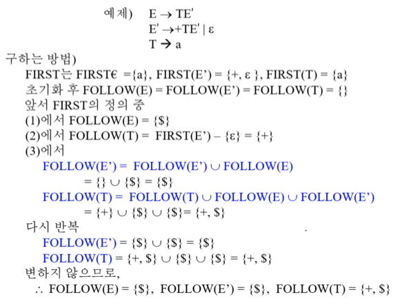
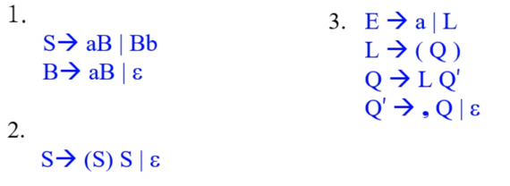
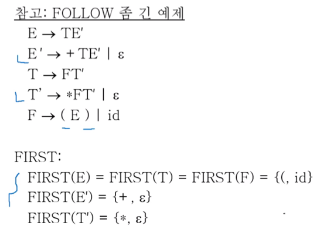
- 얘도 순서를 위의풀이 거의 그대로 외워놓아라
- 전부 {}로 세팅
- 시작심벌을 {$}로 세팅
- 뒤에 뭔가 나오는 경우 그놈의 FIRST에서 null을 빼고 전부 넣어줌
- 뒤에 암것도 없거나 뒤에 나오는놈이 nullable하면 지금까지 구한 지신의 FOLLOW랑 해당 생성규칙에서의 LHS의 FOLLOW랑 합집합 - 수식 적어가며 계산!
- 갱신이 안될때까지 4번 반복